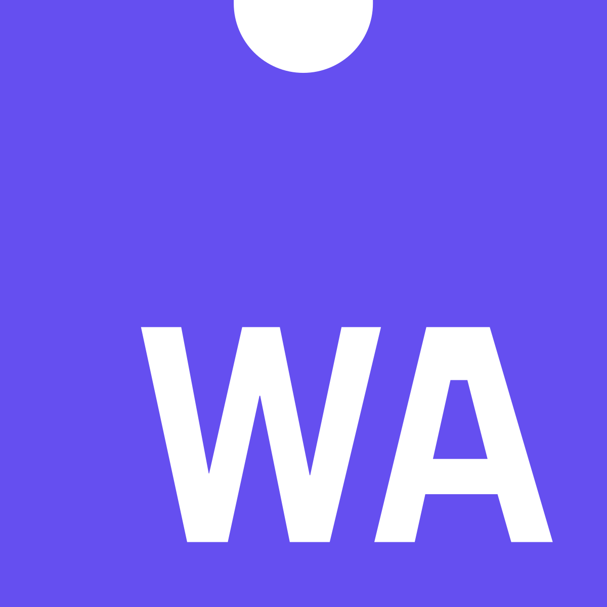

Rust
Intro to Rust
Photo by Jimmy Ofisia on UnsplashJannik Keye
My motivation for this talk:
- I have done some Rust.
- I like Rust.
- I want you to like Rust.
- So I can do more Rust.
What is Rust?
- Systems Programming Language
- Compiled
- Fast
- Safe
- Strongly Typed
- Control and performance of low-level with expressiveness of high-level
- Open Source - developed/backed by Mozilla
- "most loved programming language" on Stack Overflow Developer Survey since 2016
Why Rust?
- Wide range of applications.
- Amazing ecosystem.
- Helpful and welcoming community.
- Hard but rewarding to learn.
- Future-looking. Here to stay.

Ecosystem
rustup - Toolchain Installer
curl --proto '=https' --tlsv1.2 -sSf https://sh.rustup.rs | sh
Cargo - Package Management & Build System
Docs.rs - All package documentation in one place
Testing
rustc - An enemy you'll learn to love
rustfmt - An official code formatter
clippy - An official linter
More Learning Resources
Can I do _____ with Rust?
Web Dev in Rust
Backend
Frontend

Webassembly
More community links:
How to get started?
- probably start by reading the Rust Book
- Learn on Exercism
- rewrite an existing cli tool in rust or create a new one
- try out rust for a performance critical part of your product
- A WASM Todo App